One section, read top to bottom in one order: choose (the four programs are the navigation) → see (one large car on the same registered base) → understand (three facts, the same three for every program) → act (one button). Special editions move to their own dark band below, so the two groups can never be confused.
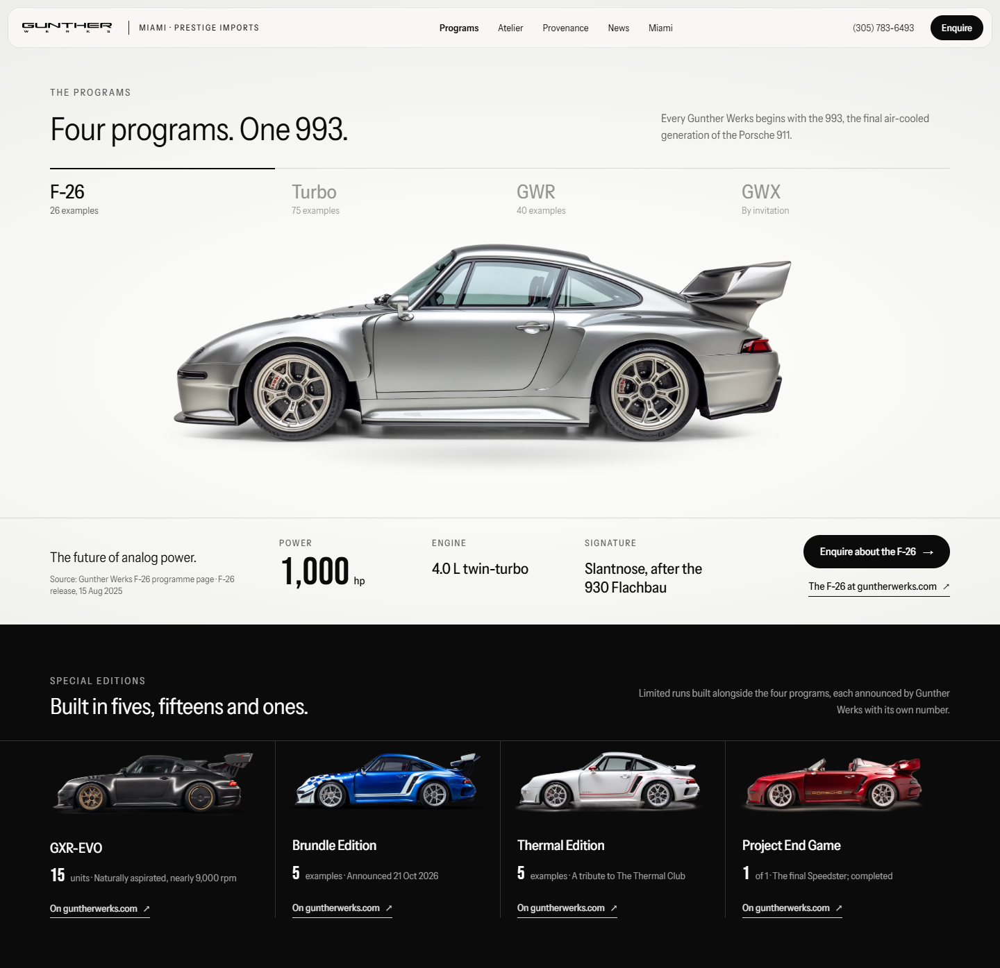
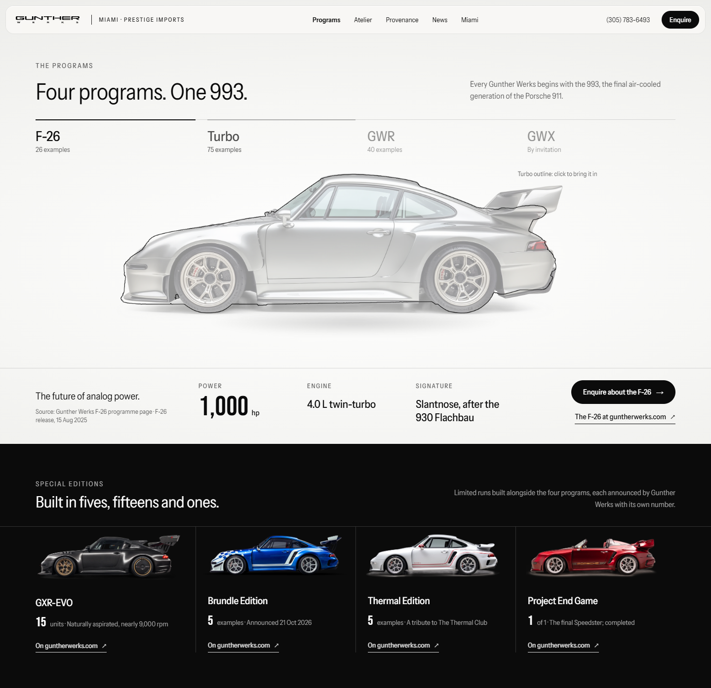
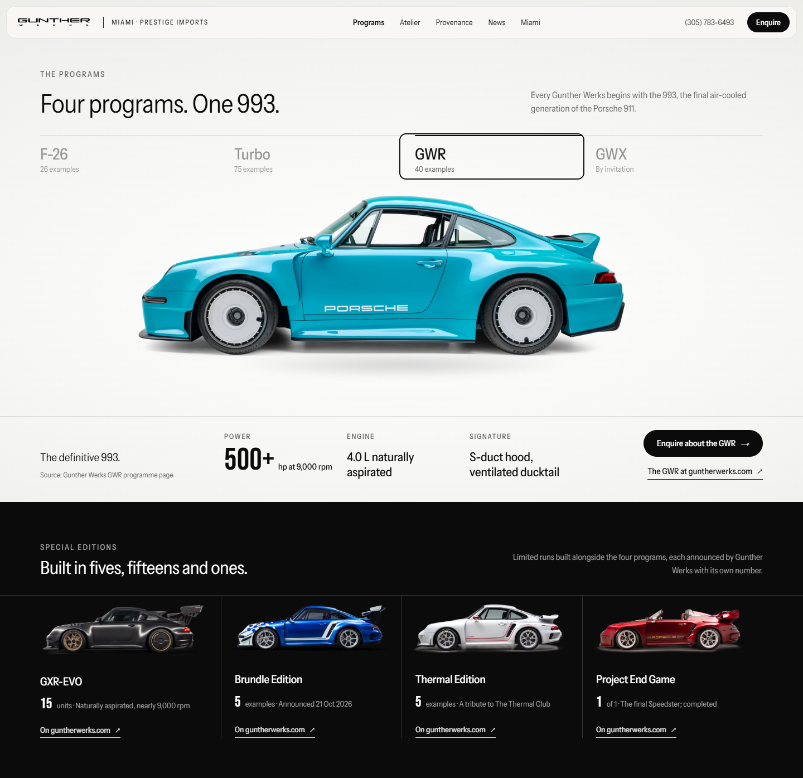
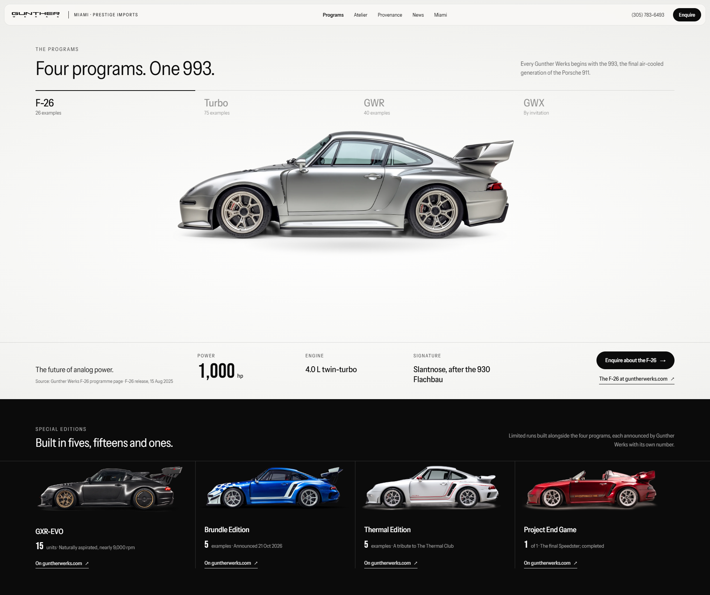
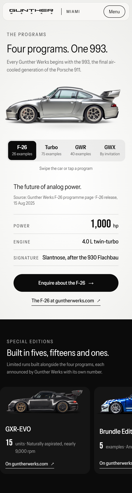
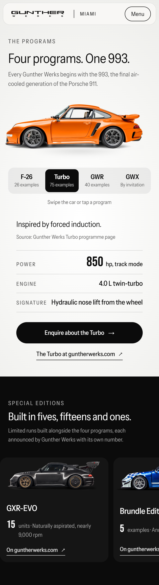
Footage test first, as asked. The F-26 clip was played as a plain muted loop at normal speed, in two variants: _contracts/goodwood-loop-test/loop-A is the best 4.4 s take three times; loop-B is the full 21 s clip twice.
Verdict: it does not hold attention, so the chapter becomes a still composition. GW's own start-line photograph carries it; the four-day log carries the information. No video, no scrub, no oversized figure.
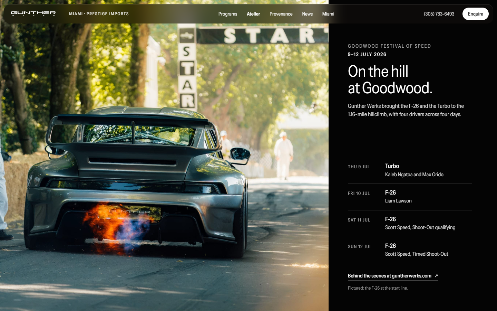
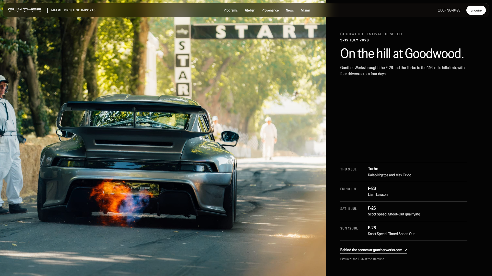
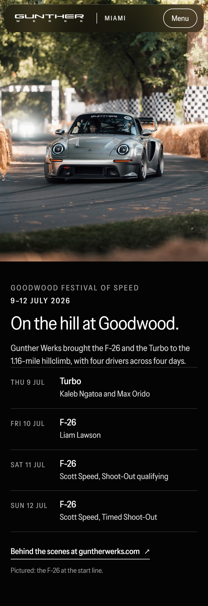
The dealer is the subject: Gunther Werks Miami at Prestige Imports. Three enquiry paths are the next step. The form opens in place, on the page ground, only after a path is chosen. The photograph sits beside the content and is never covered. Javier Roque appears once, as secondary contact information.
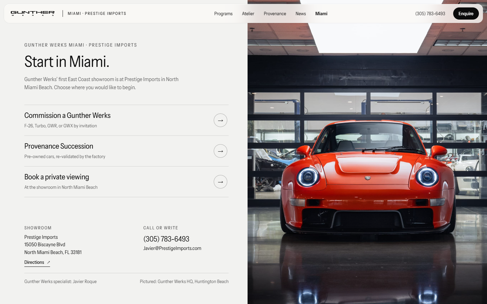
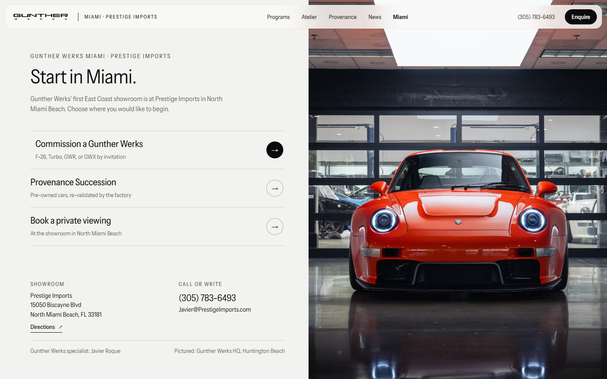
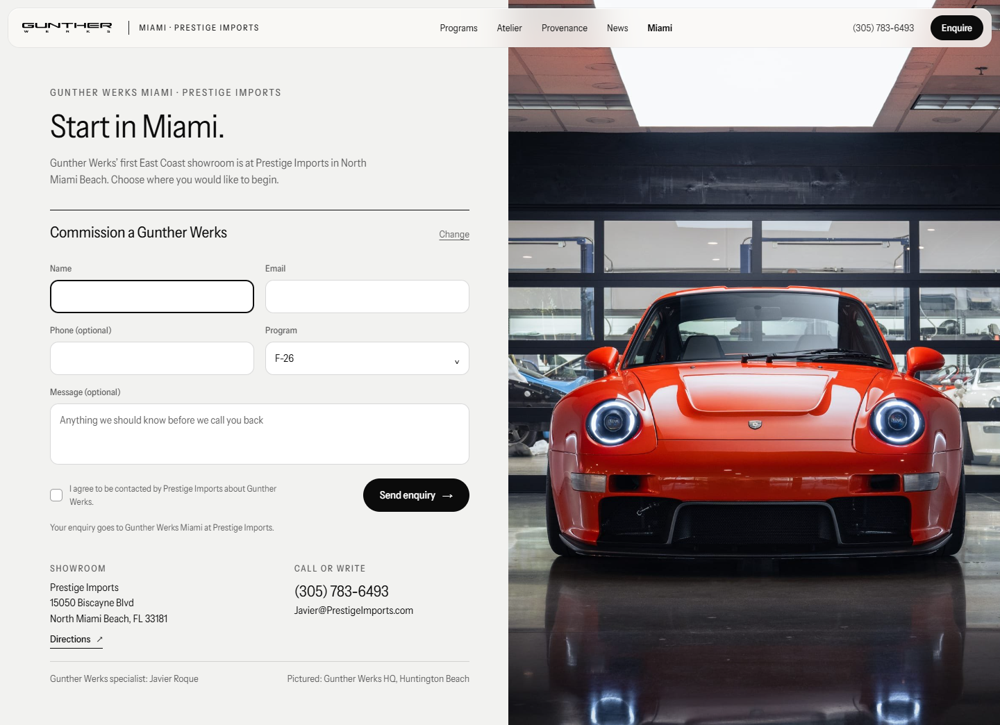
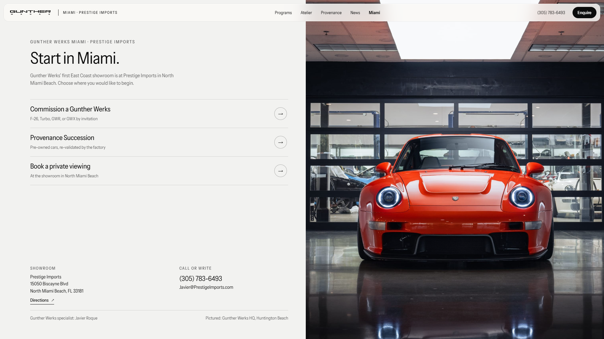
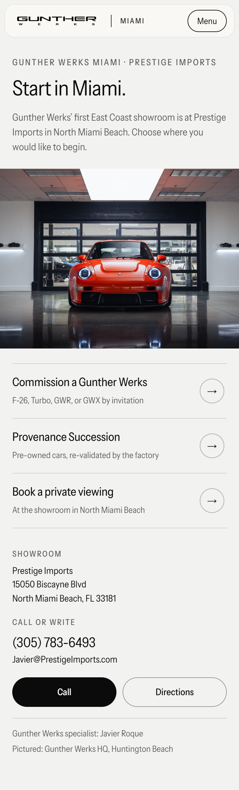
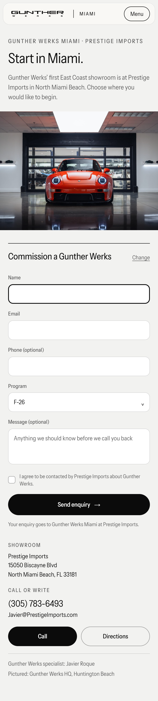
Static mockups, rendered in Chrome at 1440×900, 1920×1080 and 390×844 @2×. Overflow is 0 at every width and no request failed. Mockup sources are in prototype/concept-g/_contracts/. Awaiting approval before anything is built into Concept G.